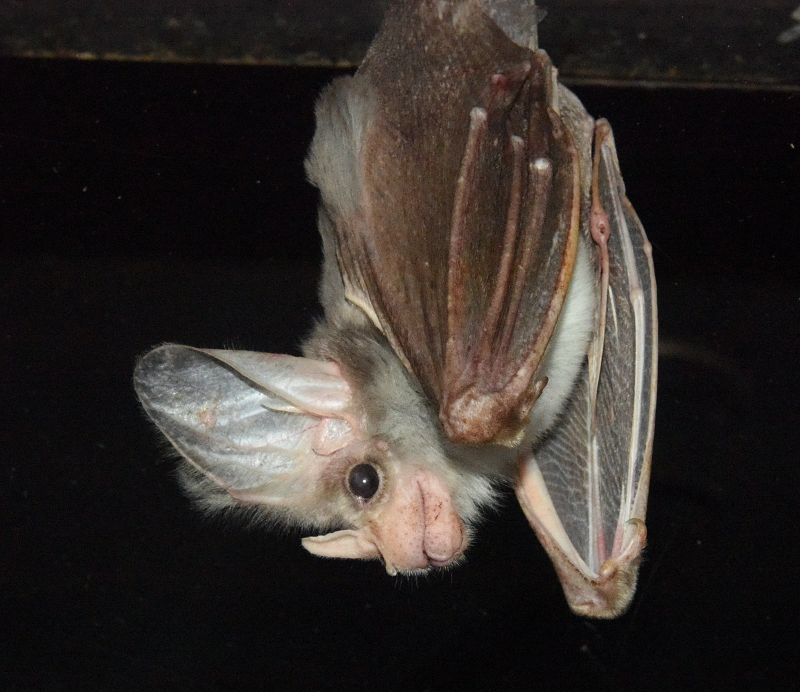

Flying Fox Bat
Habitat: Humid and Tropical forests (although this bat is only in the Phillipines)
Diet: Insects, Fruit, and Nectar
Height: 40cm
Brownie Bat
Habitat: Quiet, dark caves and/or rotted tree trunks
Diet: Mosquitos, moths, and beetles among other insects
Height: 13cm
Vampire Bat
Habitat: Humid, dark places such as caves/trees
Diet: Blood
Height: 9cm
Ghost Bat
Habitat: Arid forests (another type of bat only found in one place; Australia)
Diet: Small birds, frogs, and insects
Height: 14cm